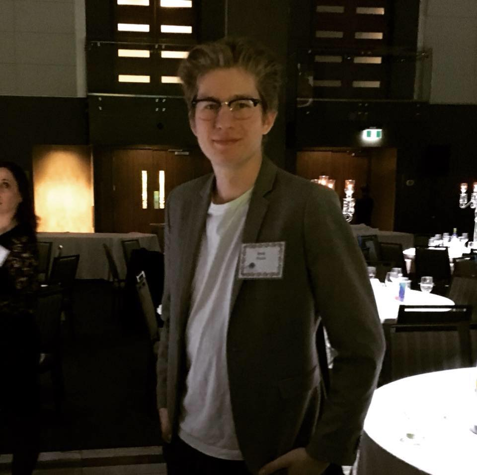

Hello, I'm Jesse Proulx
Computer Programming Student
Welcome to my professional website!
I'm a passionate front end developer with a knack for creating innovative solutions.
Computer Programming Student at Algonquin College with a GPA of 3.84.
Explore my projects, learn about my skills, and feel free to reach out!